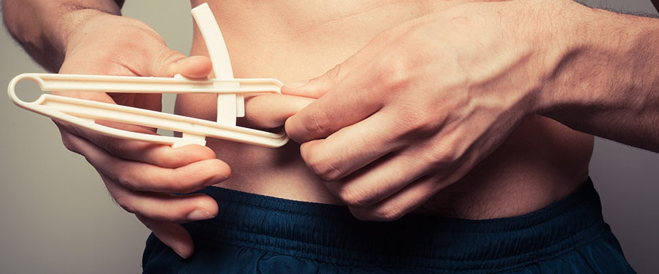
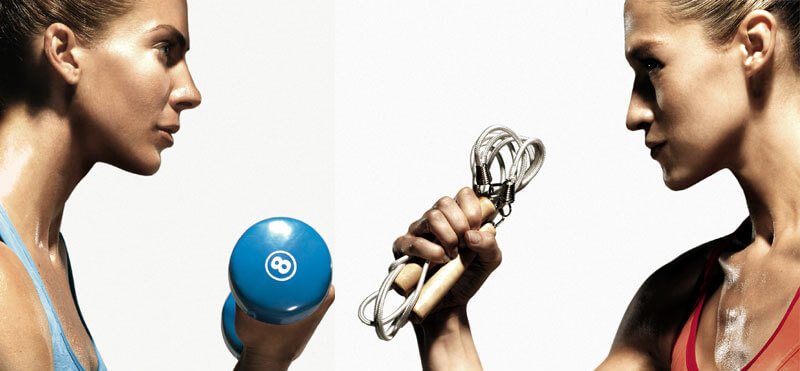
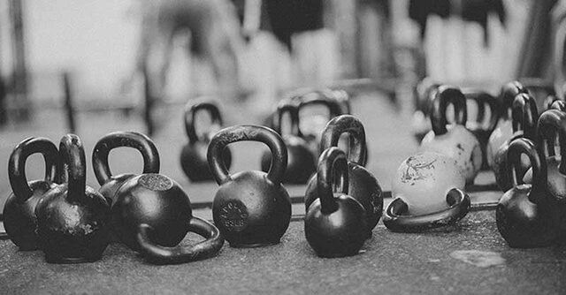
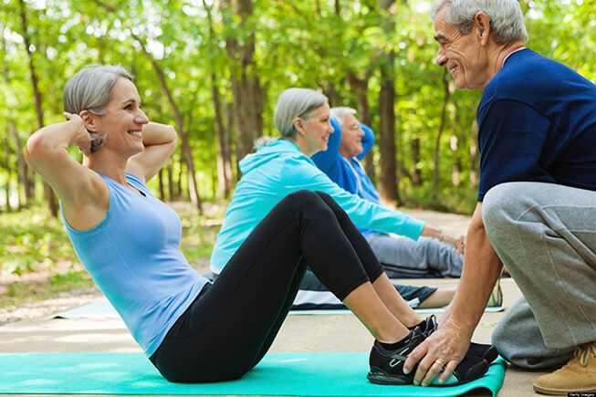

O treino para Perda de Massa Gorda tem como objectivo diminuir o percentual de gordura do atleta seja por fins de saúde ou estéticos. Para ajudar no processo de emagrecimento temos programas de treino intensos e seguros para que atinja os seus objectivos.

Preparação Física Geral
Treinos intensos, com movimentos funcionais farão com que aumente as suas capacidades motoras como a força e a resistência, capacidades coordenativas, equilíbrio, mobilidade, aumente a sua condição física e diminua os níveis de stress.

Treino de Força
O treino de força tem como objectivos aumentar a força e aumentar a massa muscular. Existem vários métodos de treino e se está a começar é essencial ter um apoio na periodização e prescrição do exercício. A FIT4ALL ajuda-o a estabelecer metas e objectivos e a chegar até eles.

Treino para Pessoas com Maus Indicadores de Saúde
A maioria das pessoas pensa que, por os seus indicadores de saúde não serem os melhores, não devem praticar exercicio físico, quando a resposta para a melhoria desses mesmos indicadores pode estar mesmo na prática de exercicio. Patologias como a diabetes, hipertensão, osteoporose, síndrome metabólico não são impeditivos da prática de exercicio físico, muito pelo contrário, aquando de um plano de treino adaptado à sua patologia poderá haver melhorias significativas na sua saúde.
Melhoria da Condição Física em Populações Especiais
A FIT4ALL está habilitada a treinar com várias populações especiais(Obesidade, depressão, diabetes, hipertensão, idosos, deficiências motoras, deficiências intelectuais), sempre com a maior atenção, segurança e no limite da condição de cada um.

Pós Fisioterapia
Ao contrário do que muitas pessoas pensam, a recuperação de diversas lesões pode e deve, na altura certa, ser feita com o exercicio físico, com a ajuda de um profissional. Após o período de fisioterapia o sistema muscular deve ser reforçado, para que possa recuperar todas as suas funções e não haja espaço para uma nova lesão. Apesar de poder fazer o seu treino sozinho, num ginásio vulgar, não se esqueça que fazendo exercícios incorrectos poderá contrair uma nova lesão e piorar a sua situação. Com a fit4all terá exercícios dinâmicos e específicos para ter uma recuperação total com toda a segurança.